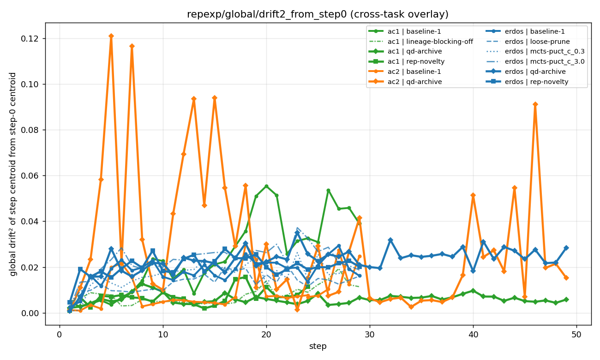
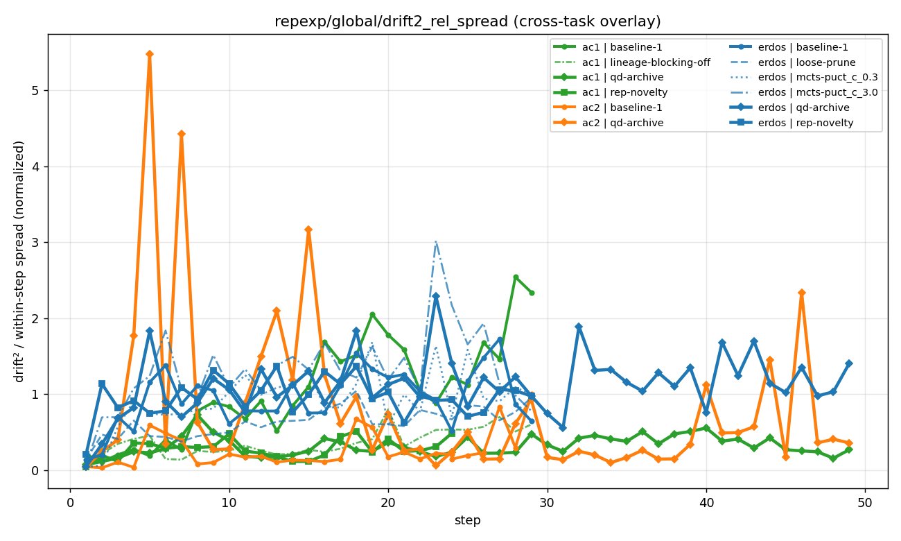
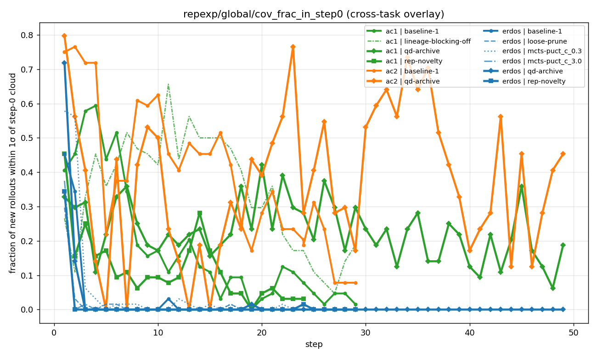
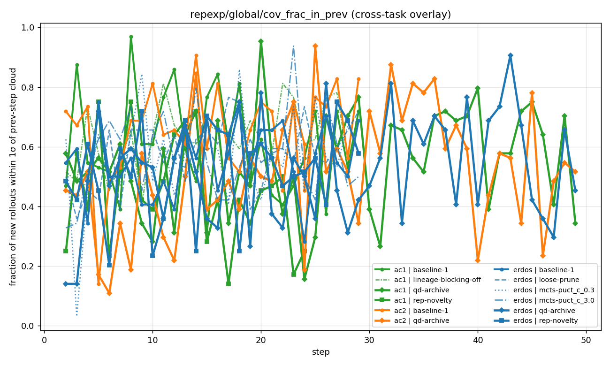
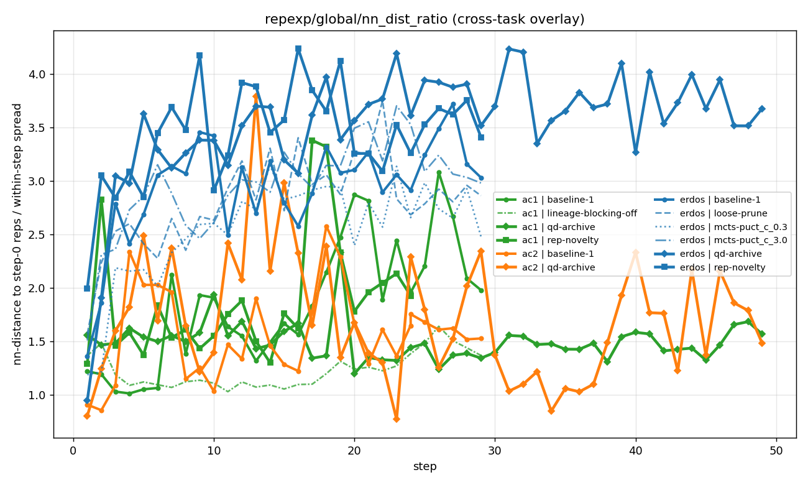
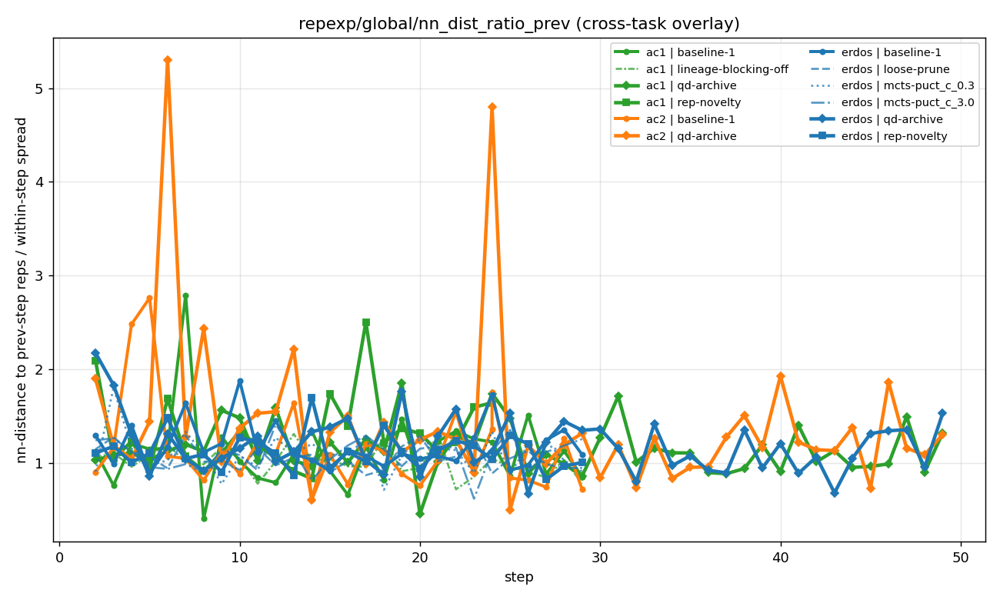

D3·D4 EXPERIMENT
D3 + D4 — Drift & coverage
Two metrics that confirm H4 from independent angles: rep-encoded global drift, and how often new rollouts land in previously-seen regions.
D3 — RepExp global drift
Re-encode all buffered states with the current policy each step, compute centroid drift. Same shape as H4d — plateaus by step ~10.



D4 — Coverage of past regions
How often do new rollouts land in or near the cloud of previously-seen rollouts?




What it means
Three independent metrics (H4d centroid drift, D3 RepExp drift, D4 NN-overlap) all agree. The policy spends increasing fractions of its rollouts re-visiting the early-training neighborhood. This isn't a measurement artifact of one metric; it's a real property of the policy trajectory.